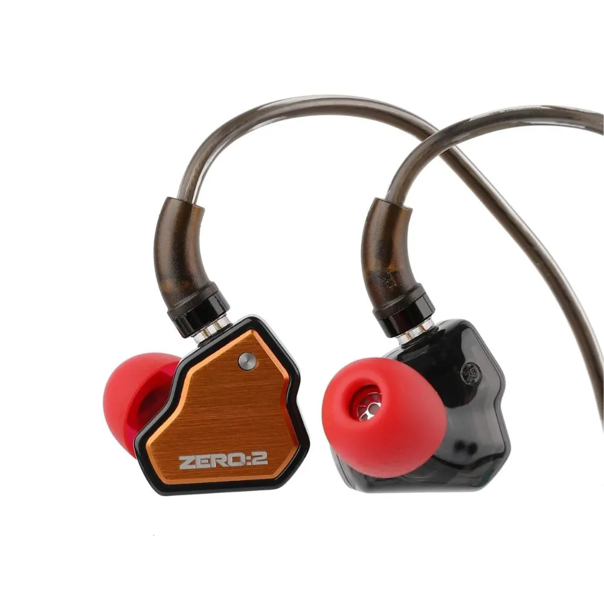
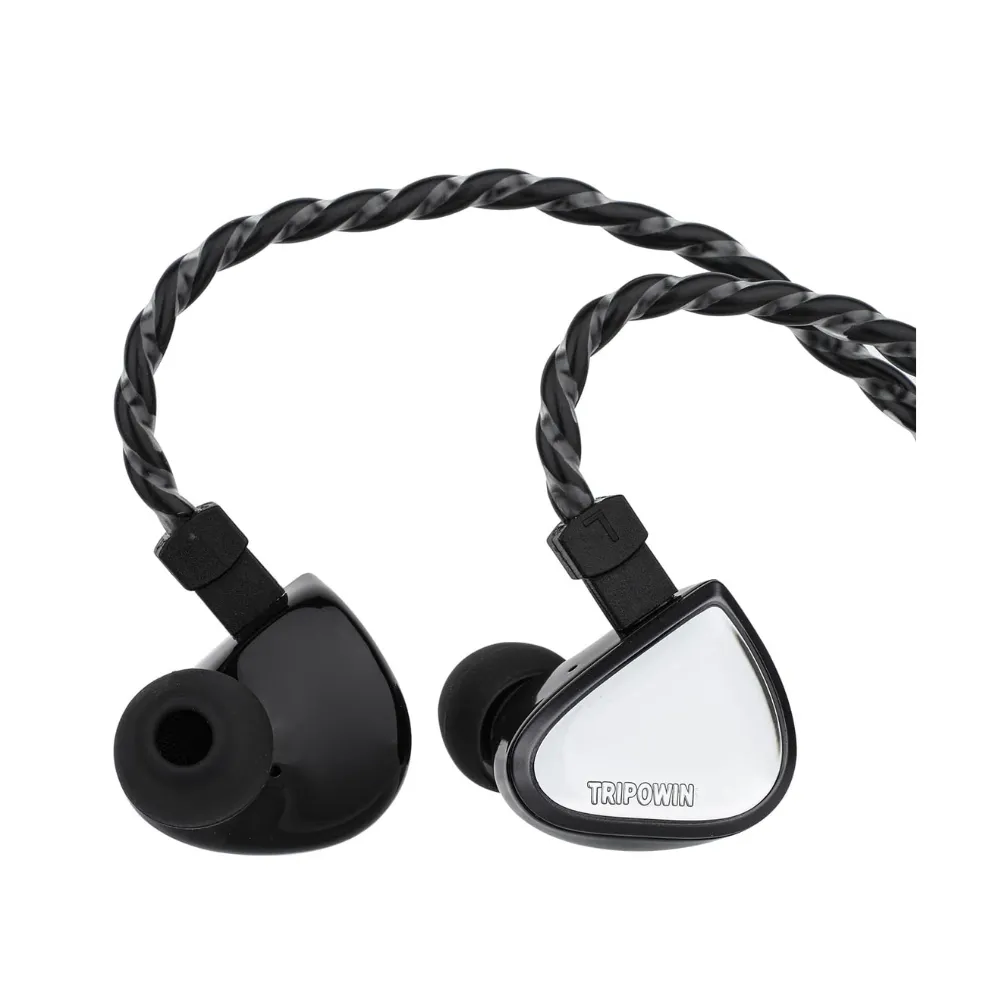

7Hz, in collaboration with the renowned Crinacle, has unveiled the Zero:2 Earphone, a sequel that takes the exceptional foundation of the original Zero to new heights. The Zero series initially made waves as one of the best-performing budget in-ear monitors (IEMs) globally, and the Zero:2 aims to continue this legacy by incorporating Crinacle’s expertise in sound tuning.
The Tripowin x 0dB I Vivace is a collaborative in-ear monitor (IEM) that combines Tripowin's expertise in audio technology with 0dB I's design philosophy. The Vivace features a hybrid driver configuration, typically consisting of balanced armature and dynamic drivers, to deliver a well-rounded sound signature. It is known for its warm and engaging sound profile, making it suitable for various music genres.
The Truthear Gate is an in-ear monitor (IEM) that offers a neutral sound signature, making it suitable for critical listening and professional use. It features a balanced armature driver configuration, which helps deliver clear and detailed audio across the frequency spectrum. The Gate is designed to provide accurate sound reproduction, making it a popular choice among audiophiles and musicians.